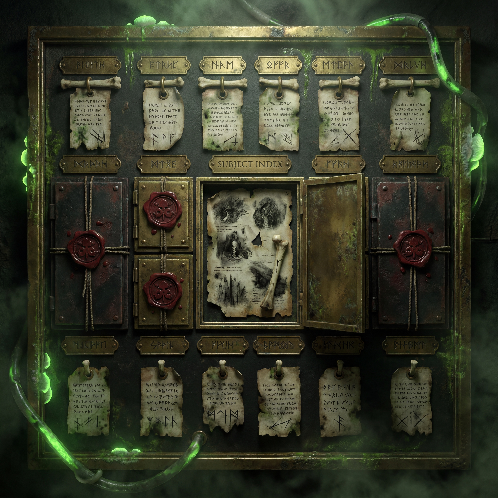
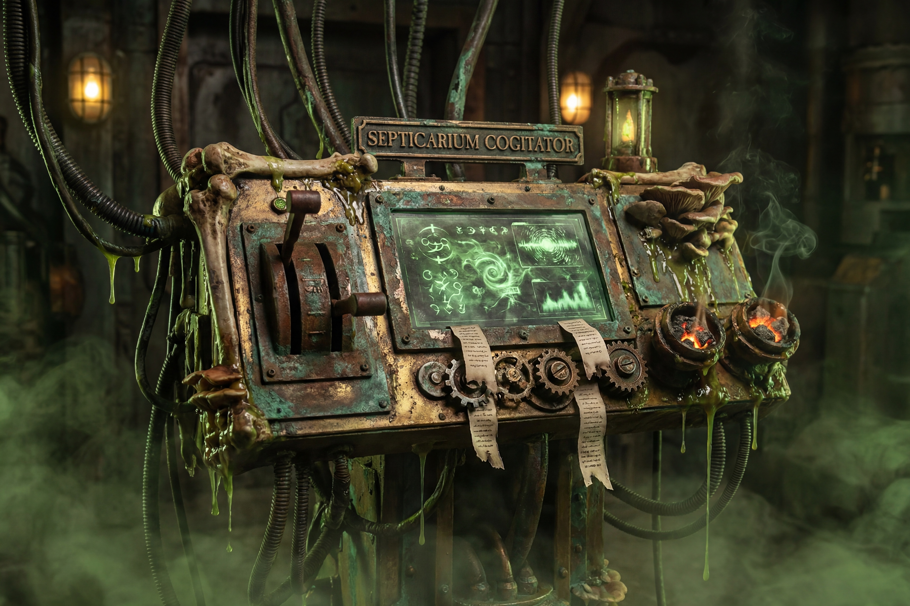

Primary Subject
Mortivus Classarion
War-master of uncertain station. Preserved as plague-champion, command anomaly, occult strategist, reliquary-bearer, and aspirant to a more terrible title not yet fully earned.
Not every record inside The Septicarium is a chronicle. Some are slow dissections of persons, warbands, relic-bearers, omen-loci, and those names whose continued existence has become tactically useful. The Plaguebound Dossier is where memory is rendered into sanctioned corruption.
Where names are not merely remembered, but cultivated.
This vault records those figures, assets, war-hosts, relic-bearers, omen-carriers, and battle-prophets whose continued movement matters to The Rotfather’s Vanguard. It is not a neutral archive. It is a chamber of plague-intelligence: a place where identity is weighed, where contradiction is preserved, and where recurring names are permitted to ripen into doctrine.
Some entries are complete enough to guide a campaign. Others remain sealed until more blood, rot, or revelation accumulates around them. What is housed here does not exist for admiration. It exists so that ruin may be better understood, better repeated, and better directed.
To gather mutable truths around important names and hold them under ritual pressure until pattern reveals itself.
Dossier language trends toward certainty after repeated exposure. This is a known side effect of archive proximity, not necessarily proof that certainty has been earned.
The Plaguebound Dossier does not collect names for remembrance alone. It gathers them so their contradictions, wounds, methods, and recurring signals may be stored under scrutiny until they harden into strategic value.
Here are compiled command temperaments, war-signatures, campaign habits, relic patterns, doctrinal anomalies, notable defeats, persistent victories, and those private obsessions that begin as quirks and end as military law. It is through such slow recording that a war-master becomes more than a brute and a relic becomes more than iron.
To distinguish a name from mere noise and determine whether it deserves long-term containment.
To observe how repeated battle contact alters that name’s meaning across years, wars, and witnesses.
To preserve those details too dangerous, shameful, or useful to be entrusted to public liturgy.
To decide which fragments should mature into full chambers and which must remain sealed beneath rot-ink.
The Dossier is deliberately incomplete. It reveals only what The Septicarium presently judges useful to open.

War-master of uncertain station. Preserved as plague-champion, command anomaly, occult strategist, reliquary-bearer, and aspirant to a more terrible title not yet fully earned.

Dormant cells prepared for plaguebound officers, rival champions, relic-servitors, omen-bearers, or recurring enemies whose persistence begins to warrant a formal chamber.

A plague-cogitator that squeezes fragments into usable intelligence. It does not answer cleanly, but it answers with enthusiasm.
No subject enters this vault whole. The chamber is built slowly by scribes, battlefield salvagers, vox-listeners, corpse-annotators, and plague-counters who each contribute a different kind of certainty.
Names are first admitted through battlefield rumor, command notice, relic association, or repeated witness recurrence.
Fragments are compared against prior war records. Contradictions are kept, not removed, if they reveal pattern.
Accounts are left beneath liturgical pressure until a usable temperament, doctrine, or omen-thread emerges.
Only then is a chamber granted. Even then, the dossier remains provisional, because a living name continues to corrupt its own record.
The central index distinguishes fully surfaced chambers from those still withheld under seal. The first open record belongs to Mortivus Classarion. Others remain dormant until the archive judges them ripe.
Command subject. War-master of The Rotfather’s Vanguard. Entry includes origin threads, doctrinal habits, panoply, weapons, victories, defeat, sub-crypts, and withheld classification pressure.
The archive suspects a future chamber dedicated solely to the titles Mortivus has worn, rejected, or has not yet grown into.
A chamber concerning the plague-prophecy obeyed by the war-host and the omen pressure it exerts on campaign choices.
Reserved for whatever future relic, atrocity, officer, or repeated adversary grows too large to remain unindexed.
Certain names are too incomplete for an open chamber yet too important to discard. They are held here under seal. Touch a withheld cell and the crypt will disclose what little it is willing to say.
The Name-Crypt does not open itself all at once. Select a withheld chamber to receive a sanctioned fragment.
This plague-cogitator is the special organ of the Dossier. It takes battlefield memory, relic ash, witness panic, and command reports, then distills them into different kinds of archive output. Choose a mode and invoke it.
A command presence defined not by speed, but by cumulative inevitability. He weakens meaning before he weakens walls.
The Plaguebound Dossier opens the subjects. Their deeper chambers hold the full weight.
Proceed to the full subject record: origin threads, burdened panoply, weapons, ideology, battle doctrine, tragedy, triumph, pyrrhic law, internal scrutiny, and the sub-crypts orbiting the name.
Return to the primary command sanctum and proceed to the other datavaults of The Septicarium: Battle Intercepts, Rot Scriptures, and the Relic Vault.
The archive does not close around a name until the name has finished making demands.